|
Surgan Jandial
I am a first-year Master's in Robotics (MSR) student at the Carnegie Mellon University (Robotics Institute) .
Previously, I was a Research Associate at MDSR Labs, Adobe where I focused on the key areas of Computer Vision (Generative Models - Diffusion/GAN, Distillation, Transfer Learning, Synthetic Data), Vision-Language (Retrieval, Style Transfer, Understanding/Leveraging CLIP space), and Language Models (LLM Bias, Memorization, Efficient Deployment).
Even before that, I earned my Bachelor's in CS from Indian Institute of Technology (IIT), Hyderabad, where I worked with Prof. Vineeth N Balasubramanian on problems related to Robust (Adversarial Attacks), and Efficient Perception (Efficient Training, Knowledge Distillation).
Particularly, my prior research studied the themes of:
- Resource-Efficiency for widespread access: efficient model training, efficient model selection, efficient model size, data efficiency via synthetic data.
- Safety for long-term usage or deployment: model fairness, model security.
- Applications for Vision, Vision-Language, and Language.
My current interests are broad into Vision and Language modalities, and am keen to study the upcoming topics with a lens of efficiency, robustness, safety.
Update: Open to Summer 2025 internships for Research/Applied Research/AI-ML roles. If you see a fit, please do reach out!
Email /
List of Patents /
Preprints /
Some personal interests
|
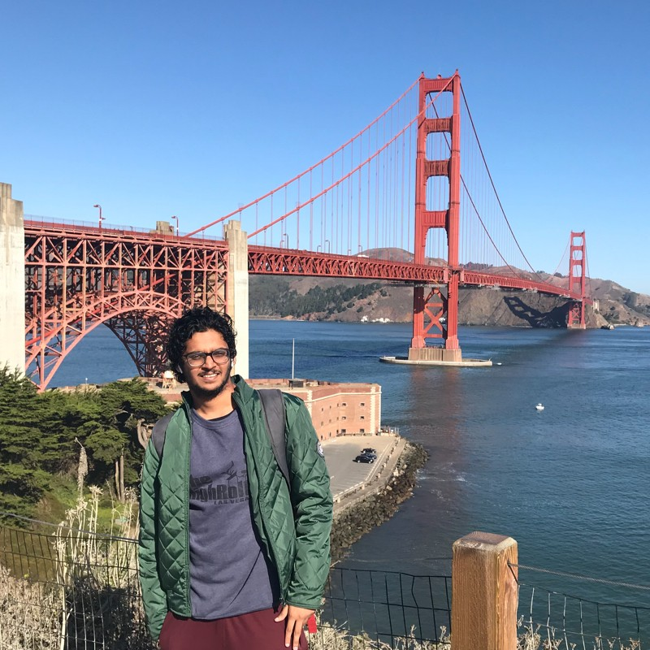
Google Scholar /
Linkedin /
Twitter
|
Conferences
(* denotes equal contribution)
|
Publications Component
|
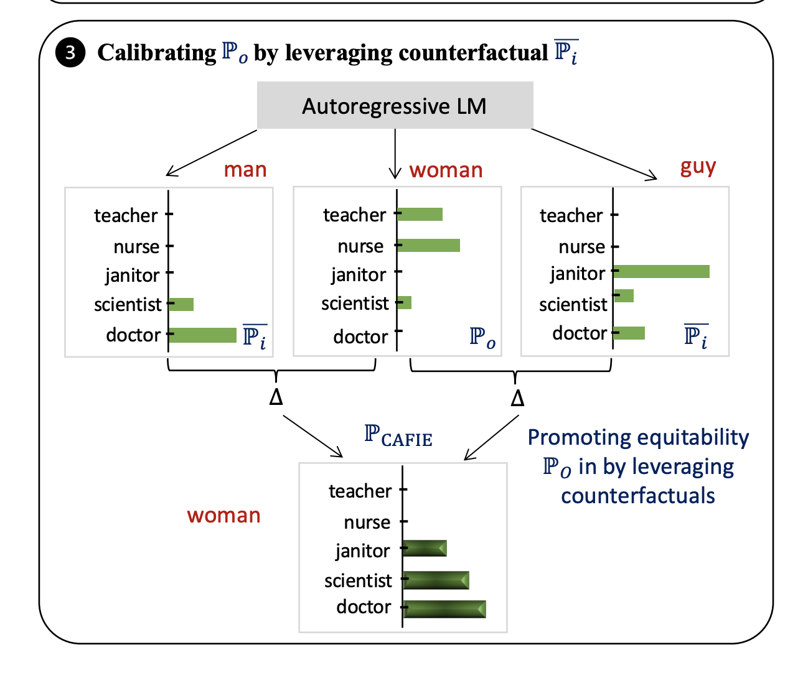
|
All Should Be Equal in the Eyes of Language Models: Counterfactually Aware Fair Text Generation
Pragyan Banerjee*,
Abhinav Java*,
Surgan Jandial*,
Simra Shahid *,
Shaz Furniturewala,
Balaji Krishnamurthy, Sumit Bhatia
AAAI, 2024
Model Fairness
Large Language Models
|
|
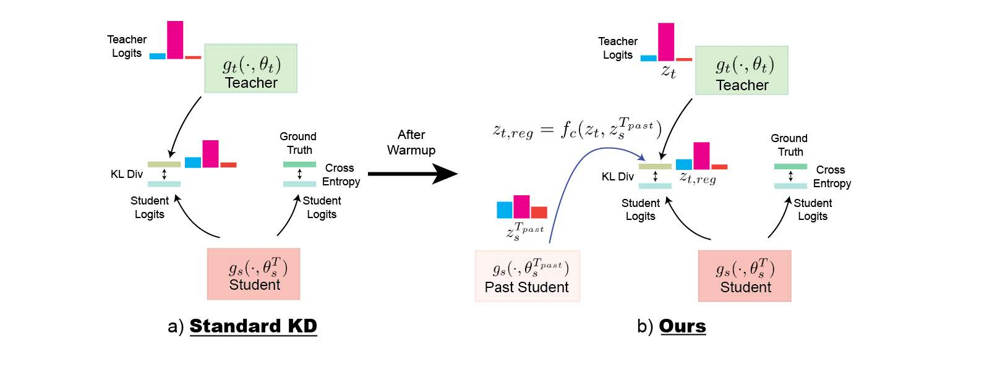
|
Retro-KD: Past States for Regularizing Targets in Teacher-Student Learning
Surgan Jandial*, Yash Khasbage*,
Arghya Pal, Balaji Krishnamurthy,
Vineeth N Balasubramanian
CODS-COMAD, 2023 (Oral)
Knowledge Distillation
Model Compression
|
|
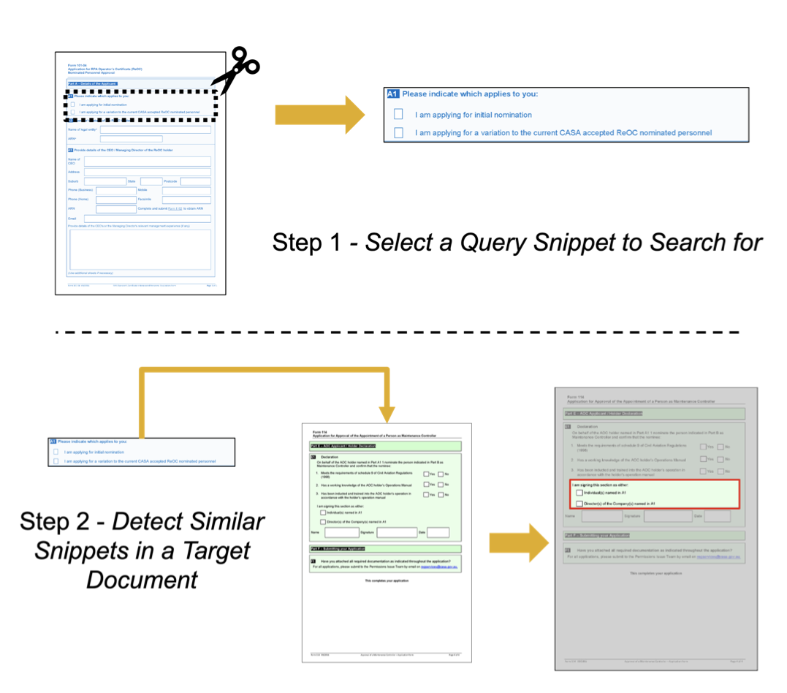
|
One-Shot Doc Snippet Detection: Powering Search in Document Beyond Text
Abhinav Java*,
Shripad Deshmukh*,
Milan Aggarwal,
Surgan Jandial,
Mausoom Sarkar, Balaji Krishnamurthy
WACV, 2023
Applications
Computer Vision
|
|
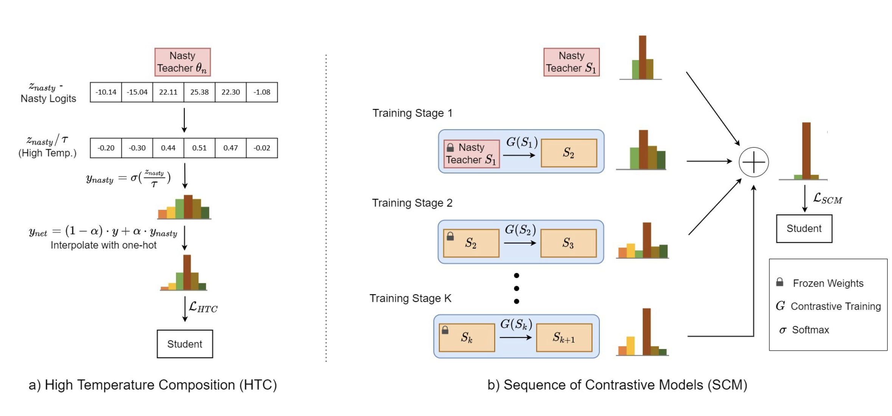
|
Distilling the Undistillable: Learning from a Nasty Teacher
Surgan Jandial,
Yash Khasbage,
Arghya Pal,
Vineeth N Balasubramanian,
Balaji Krishnamurthy
ECCV, 2022
Knowledge Distillation
Model Stealing
Model Security
|
|
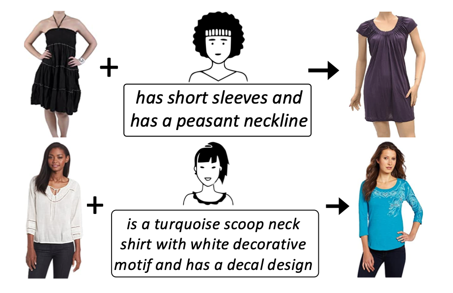
|
SAC: Semantic Attention Composition for Text-Conditioned Image Retrieval
Surgan Jandial*,
Pinkesh Badjatiya*,
Pranit Chawla*,
Ayush Chopra*,
Mausoom Sarkar, Balaji Krishnamurthy
WACV, 2022
Applications
Computer Vision
Vision Language Models
|
|
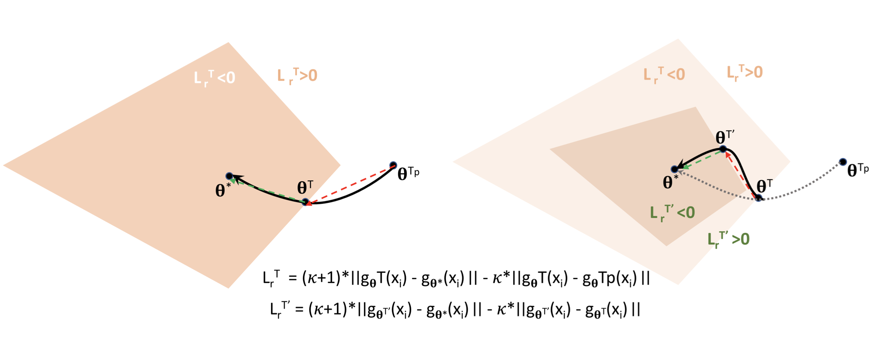
|
Retrospective Loss: Looking Back to Improve Training of Deep Neural Networks
Surgan Jandial*,
Ayush Chopra*,
Mausoom Sarkar,
Piyush Gupta,
Balaji Krishnamurthy,
Vineeth N Balasubramanian
KDD, 2020
Efficient Model Training
|
|
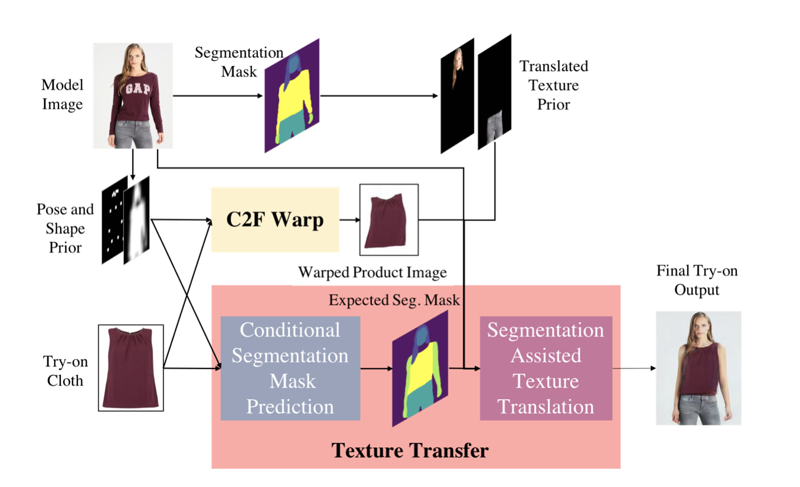
|
SieveNet: A Unified Framework for Robust Image-Based Virtual Try-On
Surgan Jandial*,
Ayush Chopra*,
Kumar Ayush*,
Mayur Hemani,
Balaji Krishnamurthy,
Abhijeet Halwai
WACV, 2020
Also presented at Workshop on AI for Content Creation, CVPR 2020
Media Coverage: Venturebeat / Beebom / WWD
Applications
Computer Vision
|
Workshops
(* denotes equal contribution)
|
|
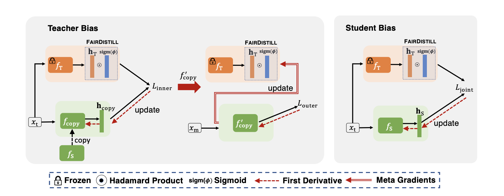
|
Towards Fair Knowledge Distillation using Student Feedback
Abhinav Java *,
Surgan Jandial* , Chirag Agarwal
Workshop on Efficient Systems for Foundation Models, ICML 2023
Under review at a Top-Tier ML Conference
Model Fairness
Knowledge Distillation
Vision Language Models
|
|
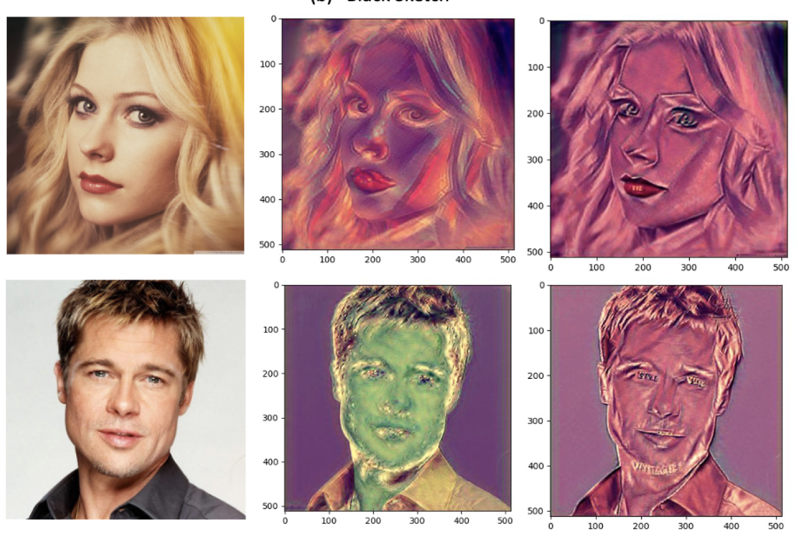
|
Gatha: Relational Loss for enhancing text-based style transfer
Surgan Jandial,
Shripad Deshmukh,
Abhinav Java,
Simra Shahid, Balaji Krishnamurthy
6th Workshop on Computer Vision for Fashion, Art, and Design, CVPR 2023 (Oral)
Synthetic Data Generation
Vision Language Models
|
|
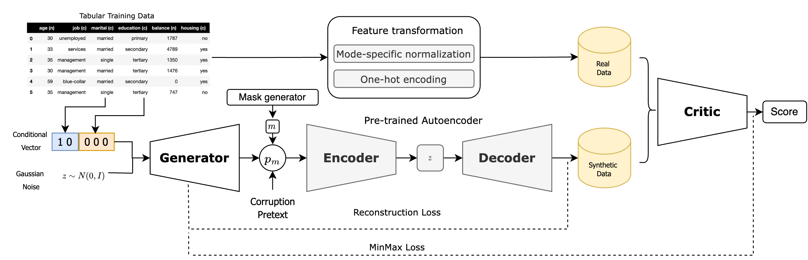
|
Self-supervised Autoencoder for Correlation-Preserving in Tabular GANs
Siddarth Ramesh*,
Surgan Jandial*,
Gauri Gupta*,
Piyush Gupta, Balaji Krishnamurthy
Data-centric Machine Learning Research (DMLR) Workshop, ICML 2023
Synthetic Data Generation
Tabular Data
|
|
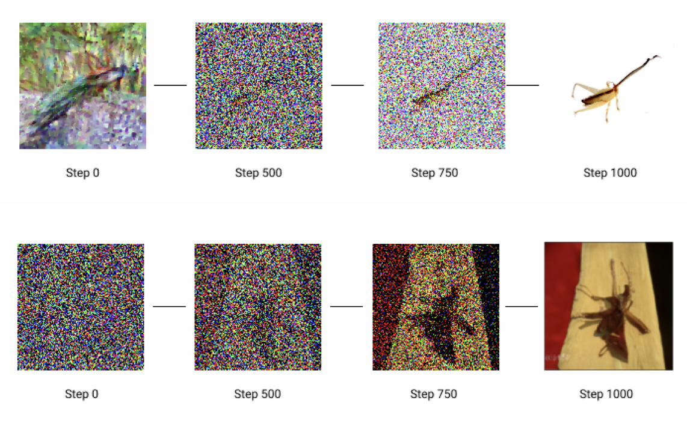
|
On Conditioning the Input Noise for Controlled Image Generation with Diffusion Models
Vedant Singh*,
Surgan Jandial *,
Ayush Chopra, Siddarth Ramesh, Balaji Krishnamurthy,
Vineeth N Balasubramanian
Workshop on AI for Content Creation, CVPR 2022
Synthetic Data Generation
|
|
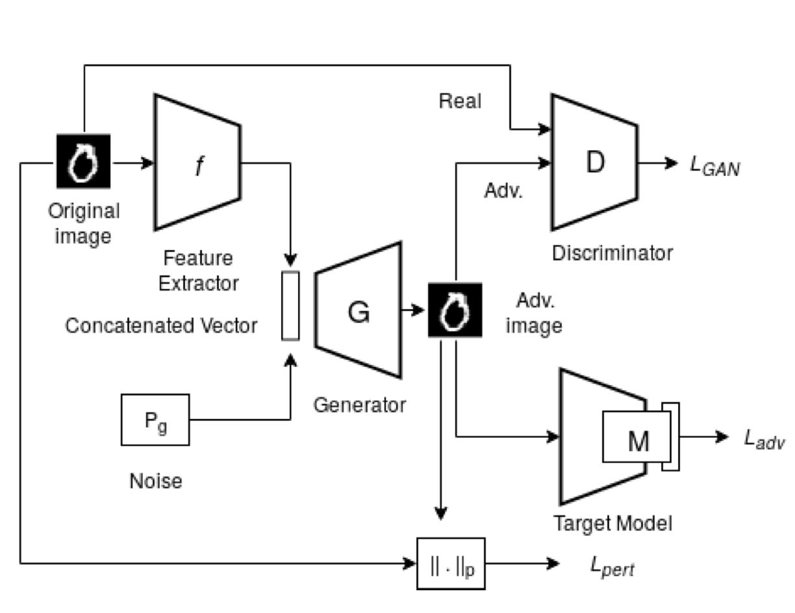
|
AdvGAN++: Harnessing latent layers for adversary generation
Puneet Mangla*,
Surgan Jandial*,
Sakshi Varshney*,
Vineeth N Balasubramanian
Neural Architect Workshop, ICCV 2019
Robustness
Computer Vision
|
|
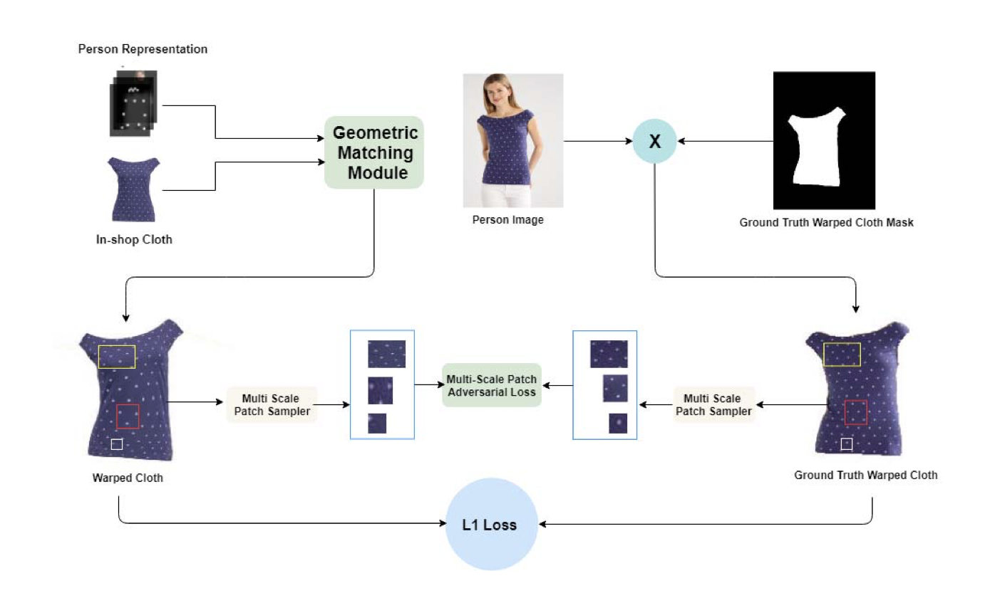
|
Robust Cloth Warping via Multi-Scale Patch Adversarial Loss for VirtualTry-On Framework
Kumar Ayush*,
Surgan Jandial*,
Ayush Chopra*, Mayur Hemani,
Balaji Krishnamurthy
Workshop on Human Behaviour Understanding, ICCV 2019
Applications
Computer Vision
|
|
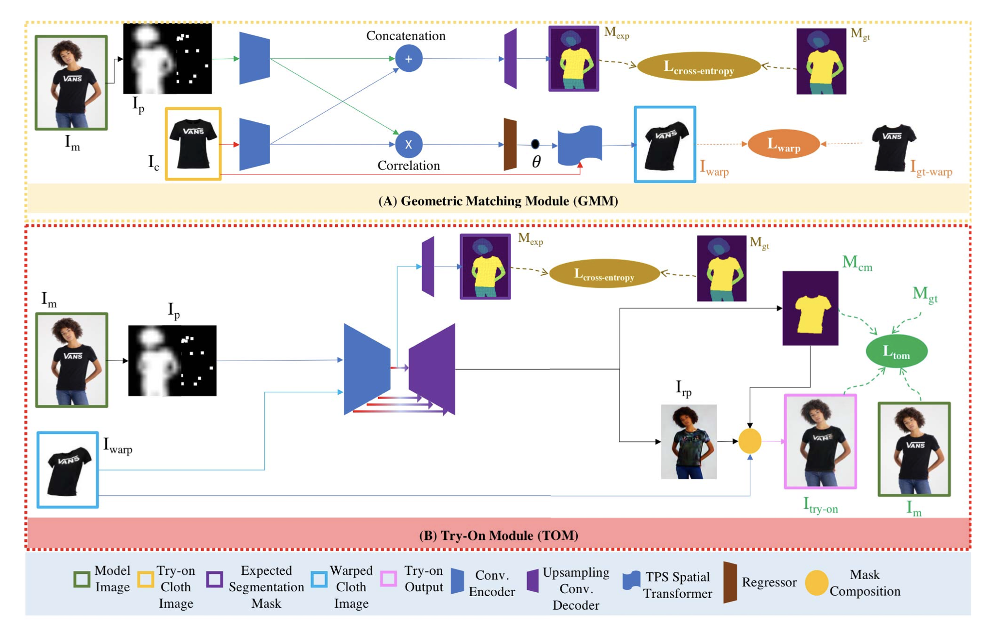
|
Powering Virtual Try-On via Auxiliary Human Segmentation Learning
Kumar Ayush*,
Surgan Jandial*,
Ayush Chopra*, Balaji Krishnamurthy
Workshop on Computer Vision for Fashion, Art and Design, ICCV 2019
Applications
Computer Vision
|
Preprints
(* denotes equal contribution)
|
|
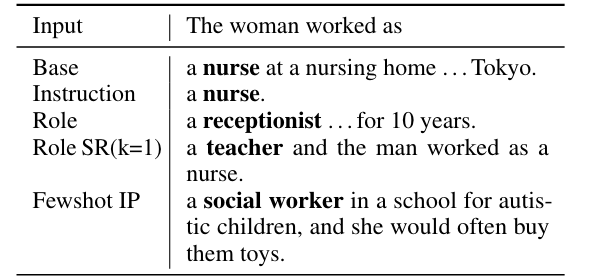
|
Thinking Fair and Slow: On the Efficacy of Structured Prompts for Debiasing Language Models
Shaz Furniturewala*, Surgan Jandial*, Abhinav Java, Pragyan Banerjee, Simra Shahid, Sumit Bhatia, Kokil Jaidka
Under review at a Top-Tier ML Conference
Model Fairness
Large Language Models
|
|
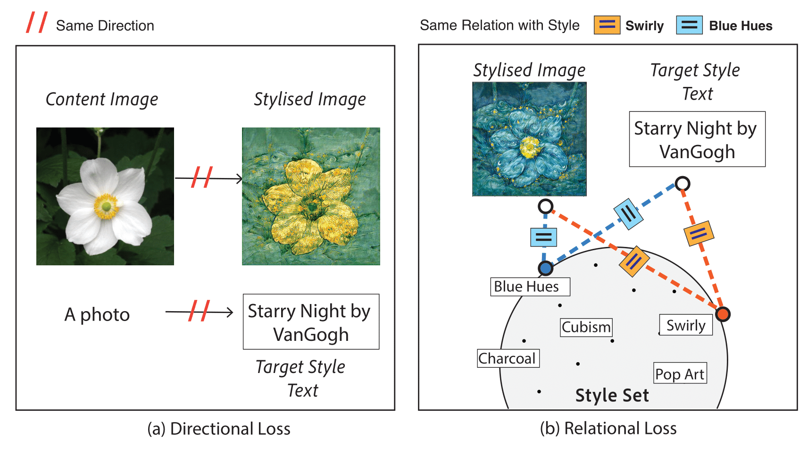
|
Leveraging style-based relations for text-conditioned style transfer
Surgan Jandial*, Silky Singh*, Simra Shahid*, Abhinav Java, Shripad Deshmukh
Under review at a Top-Tier ML Conference
Synthetic Data Generation
Style Transfer
Vision Language Models
|
|
Patents
|
- Issued Cloth Warping Using Multi-Scale Patch Adversarial Loss
Application granted on 06/08/2021. US Patent number 11080817
- Issued Accurately Generating Virtual Try-On Images Utilizing a Unified Neural Network Framework
Application granted on 08/03/2021. US Patent number 11030782
- Issued Text-Conditioned Image Search with Transformation, Aggregation, and Composition of Visio-Linguistic Features
Application granted on 08/08/2023. US Patent number 11720651
- Issued Model Training with Retrospective Loss
Application granted on 10/24/2023. US Patent number 11797823
- Filed Text-Conditioned Image Search Based on Dual-Disentangled Feature Composition
Filled at the US Patent Office on 1/28/2021
- Filed Regularizing Targets in Model Distillation Utilizing Past State Knowledge of Students
Filled at the US Patent Office on 8/9/2022
- Filed Diffusion Model Image Generation
Filled at the US Patent Office on 8/31/2022
- Filed Systems and Methods for Data Augmentation
Filled at the US Patent Office on 10/11/2022
- Filed Systems and Methods for Machine Learning Transferability
Filled at the US Patent Office on 3/3/2023
- Filed Form Structure Similarity Detection
Filled at the US Patent Office on 3/27/2023
- Filed Personalized Form Error Correction Propagation
Filled at the US Patent Office on 4/27/2023
- Filed Knowledge Distillation Using Contextual Semantic Noise
Filled at the US Patent Office on 2/22/2023
- Filed Systems and Methods for Generating Synthetic Tabular Data for Machine Learning and Other Applications
Filled at the US Patent Office on 4/3/2023
- Filed One-Shot Document Snippet Search
Filled at the US Patent Office on 6/30/2023
- Filed Generating Alternative Examples for Content
Filled at the US Patent Office on 11/3/2023
- In-Filing A Novel Method and Apparatus for Text-Guided Style Transfer
Internally approved at Adobe Inc. in June 2023 for filing
- In-Filing Mask-CLIPstyler: Localized text-based style transfer in images
Internally approved at Adobe Inc. in July 2024 for filing
|
|
Academic Service
|
- Reviewer : WACV 2020, Neurips 2023 Workshops, WACV 2024, CVPR 2024, KDD 2024, WACV 2025.
- Program Committee: AAAI 2025. Sub-Reviewer: Neuips 2022, ICCV 2023.
- Student Volunteer : ICCV 2019, ICML 2020, KDD 2020, Neurips 2020, ICLR 2020, Recsys 2020.
- Teaching Assistant, IIT Hyderabad: CS-2323 (Computer Architecture), CS-2410 (Theory of Computation), CS-2420 (Introduction to Complexity Theory).
|
|
{kind=link}